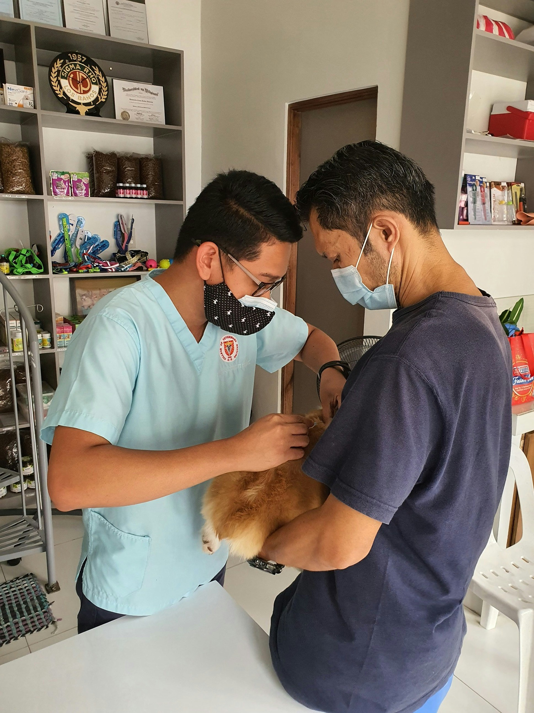
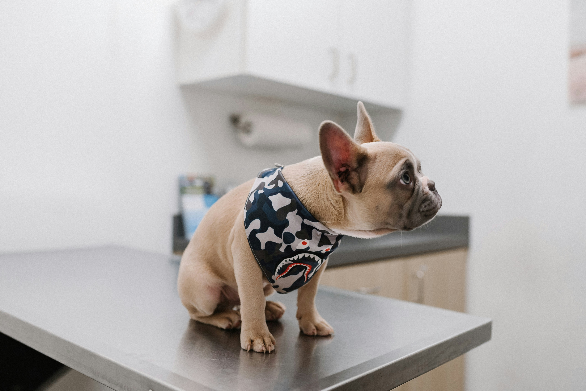
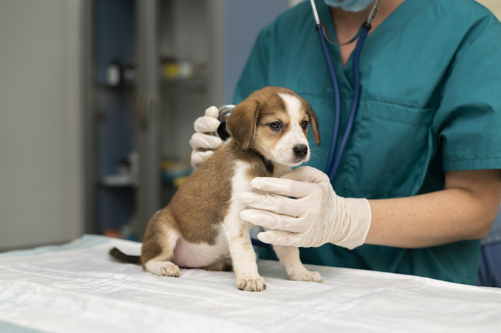
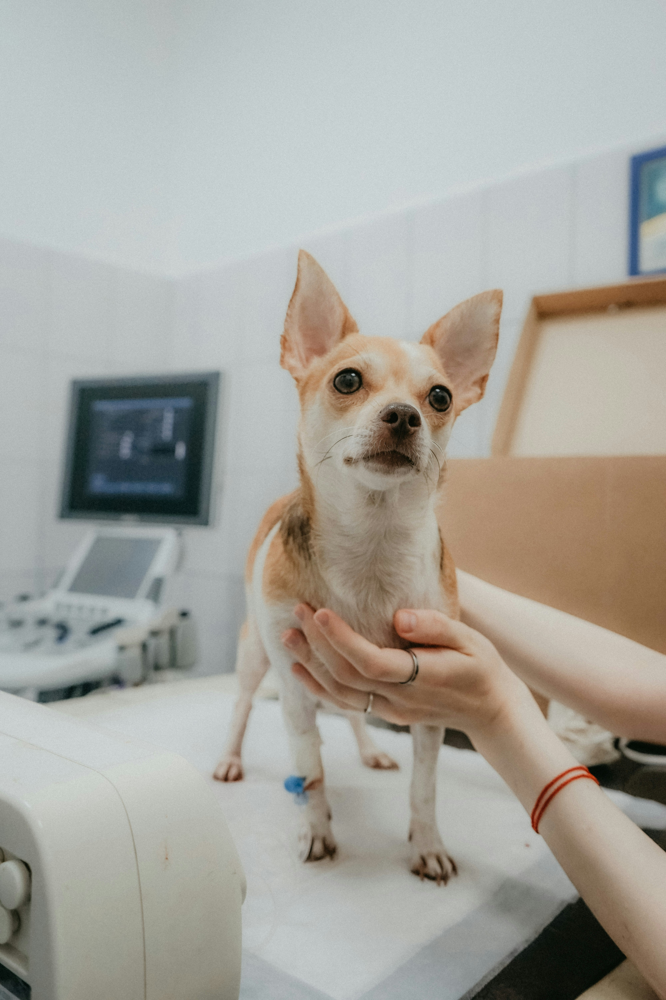

BIENVENIDOS A NUESTRA VETERINARIA
Cuida a tus mascotas con los mejores profesionales.


Nuestros Servicios
Atención Médica General
Nuestro equipo de veterinarios está siempre disponible para brindar atención médica general a tus mascotas, incluyendo consultas generales, chequeos de rutina y vacunaciones.



Estudios Médicos y Cirugías
Realizamos estudios de diagnóstico avanzados como ecografías, radiografías y análisis de laboratorio, además de cirugías especializadas.
